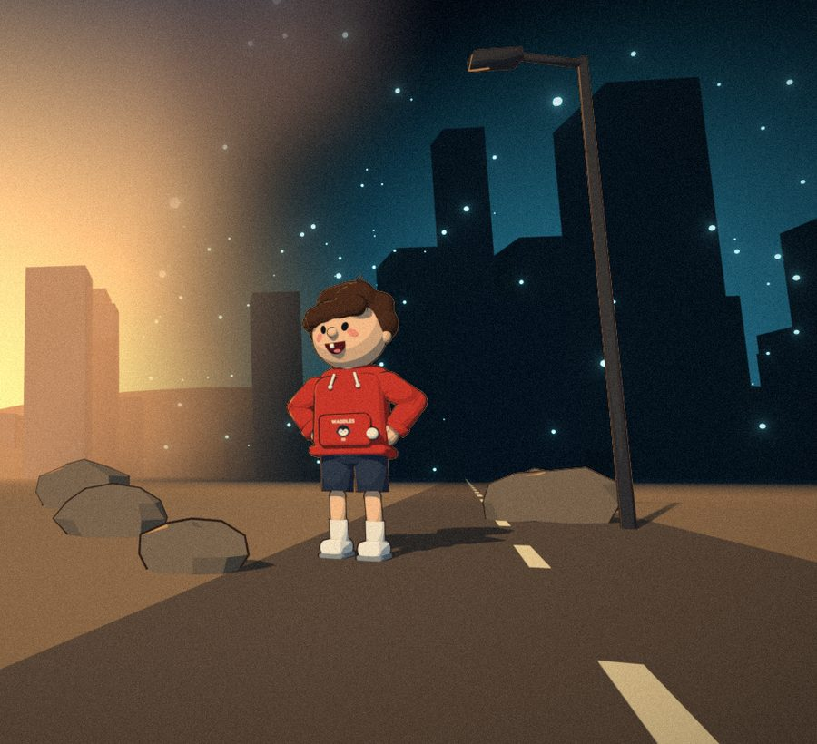

5 THINGS
5 things that would happen if…
@5thingswhatif
- FacebookEvery episode, first
- YouTubeShorts and longer deep dives
- TikTokNew what-ifs every day
- InstagramReels
Researched what-ifs, told in about a minute.

5 things that would happen if…
@5thingswhatif
Researched what-ifs, told in about a minute.